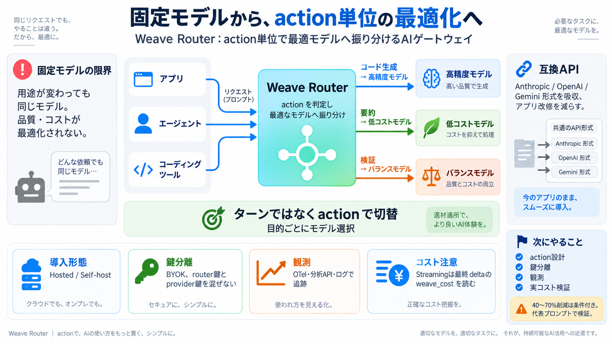

actionで最適モデル
Weave Router は、エージェントやコーディングツールが送る各リクエストを「最適なLLMへ自動ルーティング」するドロップイン・プロキシです。会話全体ではなく “action（目的）単位” で判断します。
固定モデルの限界
アプリが特定のモデル名を固定で呼ぶと、品質・コスト・体験が用途ごとに最適化されません。タスクが変わっても同じモデルを使い続け、無駄な支払いが起きやすくなります。
actionで切替
ルーターは、会話の進行（ターン）ではなくリクエスト側が示す目的（action）を基準にモデルを選びます。これにより切替のタイミングをタスク単位にできます。
互換APIで吸収
Anthropic / OpenAI / Gemini などの要求を、互換APIの形で受け取りつつ内部で最適モデルに振り分けます。アプリ側の“作り替えコスト”を下げる設計思想です。
2つの提供形
提供形態は主に 2 つです。 (1) npx を使うホスト型（Weave hosted router） (2) Postgres と router を自前構築する自己ホストです。
BYOK・分離
自己ホストでは、プロバイダキーを手元で暗号化して保持する BYOK を前提とします。さらにルーターキーとプロバイダキーを混ぜない点が強調されています。
OTelと分析API
ルーティングはブラックボックスになりがちですが、OTel（OTLP）トレースや分析系エンドポイントにより追跡・監査・最適化が可能です。ログ（NDJSON）取得や価格表のエクスポートも含まれます。
ストリーミング罠
ストリーミング応答では、HTTPヘッダに最終コストを載せられないため注意が必要です。最終の message_delta usage イベント内の weave_cost を読むべき、とされています。
推論せず判断のみ
ルーティング判断だけを返すエンドポイントとして POST /v1/route が用意されています。プロキシせずに“どのモデルにするか”の意思決定を確認できます。
ダッシュボード分離
ダッシュボードの管理パスワードが未設定の場合でも推論は動き得る一方、ダッシュボード管理は無効になる読み取りです。運用では「可観測性/管理」と「推論可否」を分けて考えるのが安全です。
再現条件は検証
README記載ではコスト削減（40〜70%）が示唆されますが、どのモデル群・どの利用パターンで達成されるかは別途検証が必要です。action・ツール呼び出し・ストリーミング差分は実データで確認しましょう。
まずは理解→検証
導入前に「action設計」「鍵分離（BYOK）」「OTel/分析での検証」「ストリーミングの費用取得」を確認すると、期待値ズレを減らせます。
No references found